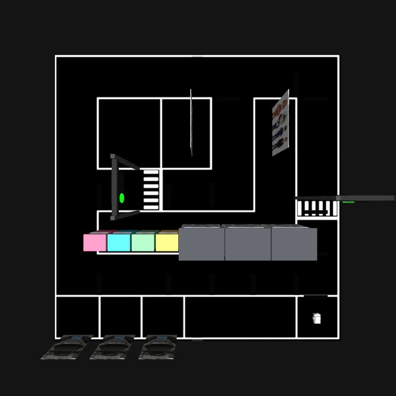
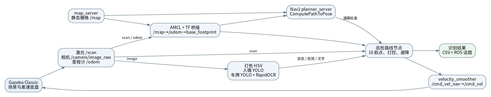
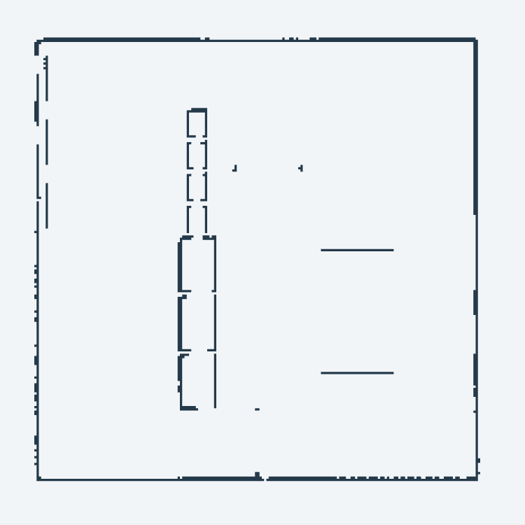

ROS 2 仿真巡检系统：架构、算法与实车迁移


所有仿真节点使用 /clock。机器人 URDF/Xacro 定义差速底盘、前后万向轮、360° 激光雷达和一台单目相机；Gazebo 插件发布传感器、里程计和关节状态。robot_state_publisher 发布车体及传感器静态/关节 TF。定位阶段由 map_server 提供栅格图、AMCL 输出位姿，项目中的 amcl_tf_bridge 持续发布 map→odom；底盘插件发布 odom→base_footprint。
| 通信 | 数据与用途 |
|---|---|
| 话题 | /scan（LaserScan）、/camera/image_raw（Image）、/odom（Odometry）、/amcl_pose（PoseWithCovarianceStamped）、/map（OccupancyGrid）。图像订阅使用 best effort；静态地图和仿真灯态使用 transient local。 |
| 动作 | 路线节点向 Nav2 ComputePathToPose 发送逐段规划请求。默认轻量模式不调用 Nav2 NavigateToPose 控制器。 |
| 控制链 | 路线节点发布 /cmd_vel_nav，velocity_smoother 输出 /cmd_vel，Gazebo 差速插件据此驱动车轮。 |
| 识别结果 | 灯色 /traffic_light/lightN/vision_state；人偶请求与结果 /person_count/request、/person_count/result，汇总 /person_count/final；车牌框 /plate_detect，文字 /plate_text。路线节点另写两份 CSV。 |
入口是 my_robot/launch/bringup_navigation.launch.py。它先启动 Gazebo，再延时启动地图、AMCL 与 Nav2，随后启动路线和视觉节点。源码中 plate_detect_cn 节点未受 enable_camera 条件约束，关闭相机时若仍使用总入口，需一并调整该启动项。
competition_world.sdf 通过 SDF 模型引用组织场地。地面贴图绘制车道线与停车区，独立模型放置两组灯、A/B 人偶立牌、三辆贴有车牌纹理的车、三栋楼和四分类垃圾桶。红绿灯由 C++ Gazebo Classic world plugin 改变灯盘材质，并向 ROS 发布状态；两组灯均按红 10 秒、绿 15 秒、黄 3 秒循环。场地中的若干黑色通行缺口是贴图视觉处理，不改变激光碰撞几何。
仿真车体长 0.30 m、宽 0.20 m；驱动轮半径 0.035 m、轮距 0.22 m，前后万向轮支撑。雷达为 360 线、约 10 Hz、有效范围 0.05～12 m；相机为 960×720、8 Hz、水平视场角 1.6 rad，安装在车头并上仰约 0.4 rad。底盘插件以轮距和轮径将速度指令转为左右轮运动，并给出里程计。这些量来自 Xacro 配置，是仿真参数，不能直接当作实车硬件指标。
面向总决赛，实车应以组委会认证平台为底座。建议保留差速驱动、编码器和急停，配一只 360° 激光雷达与一台可锁定曝光的单目相机；计算单元需能运行 ROS 2、目标检测和 OCR。供电、算力和安装空间须依认证平台复核。赛题允许的相机上限是单目不多于一台、立体相机不多于一台；本方案的基础配置只用一台单目相机。
建图模式启动 cartographer_node 和占用栅格节点，以激光扫描和轮式里程计进行 2D SLAM，不使用 IMU。Cartographer 将相邻扫描匹配到局部子图，再由位姿图约束修正累计漂移；配置中启用了在线相关扫描匹配、60 帧子图以及周期性位姿图优化。survey_driver.py 可带车巡场，save_cartographer_map.sh 把状态保存为 .pbstream 并导出栅格图。仓库中已有 maps/smart_community_map.*。
当前自动巡检默认读取 my_robot/maps/competition_nav_map.yaml。这张图由 generate_navigation_map.py 从现行 SDF 模型中与雷达高度相交的碰撞盒生成，分辨率 0.05 m，原点为 (-5.2, -5.2)。

巡检时，AMCL 将雷达观测与静态地图匹配，用差速里程计作为运动先验。TF 主链为 map→odom→base_footprint→base_link。项目关闭 AMCL 自带的 TF 广播，由 amcl_tf_bridge 以最近一次 AMCL 位姿和对应里程计持续刷新 map→odom。短时收不到 AMCL 更新，路线节点用里程计相对位移外推；位姿超过 2 秒或激光超过 1 秒未更新时停车。
路线表写在 navigate_traffic_lights.py，共 16 个航点：东侧北上过第一灯，识别 A/B 立牌，西行过第二灯，再沿南侧停车区识别三辆车并返回起点。每段调用 Nav2 的 Navfn 规划器检查能否通行；use_astar: false，即此配置采用 Navfn 默认势场搜索。若规划路径偏离当前直线车道超过 0.35 m，路线节点拒绝该段规划。实际速度指令由该节点按目标方位角误差与剩余距离计算，线速度默认上限 0.18 m/s。
动态障碍处理使用前方激光点。候选障碍在车前约 1.25 m 内时，先检查左右绕行空间、静态地图以及地面白线距离；可绕时生成车道内偏移目标，空间不足则停车。正前方距离小于 0.32 m 时直接停车。白线判断依赖场地贴图和已知缺口位置，实车不能原样复用，需改为相机检测车道/停止线并结合定位做几何约束。
| 任务 | 当前实现 | 输出与判定 |
|---|---|---|
| 红绿灯 | 已知灯架坐标与相机几何投影确定图像区域；HSV 红、黄、绿阈值和连通域面积识别亮灯。 | 视觉灯态与 Gazebo 插件状态均送给路线节点；任一来源报红或黄即停车。视觉未知时可参考插件状态。 |
| 人偶立牌计数 | person_yolov8n.pt 检测 COCO person 类，按框高、上下边界和画面位置筛掉背景目标。 | 路线在 A/B 立牌前发请求，同一人数至少出现两次才确认；20 秒内未稳定则标为未确认/未识别。汇总发布话题并写 CSV。 |
| 车牌检测与 OCR | plate_detect.pt 检出车牌框，选画面中央的候选；RapidOCR 对放大裁剪图读字，并用中国省份简称、字母和 5～6 位后续字符的格式规则过滤。 | 检测框置信度需超过 0.3；停靠点连续三次检测才开始观察。OCR 分数至少 0.75，文字经过两次投票才确认；最短停车 3 秒，最长等待 10 秒，逐站写 CSV。 |
两个 .pt 权重文件在仓库内。总决赛前应采集不同距离、角度和光照下的现场图像，划分训练/验证/测试集，针对小车牌、遮挡人偶、灯光反光做增广与困难样本复核；以逐任务召回、误报和端到端完成时间验收。
尤其要注意：仿真插件状态是用于调试的“真值”通道。实车没有这个通道，交通灯决策必须由相机观测驱动。若图像过曝、遮挡或连续几帧颜色冲突，策略应保持停车并重试；不能把仿真真值作为实车识别结果。
/scan、/camera/image_raw、/odom 与 TF，订阅 /cmd_vel。在相同 ROS 2 接口下替换 Gazebo 传感器和差速插件，先验证速度方向、时间戳与急停。开发环境以项目文件所用的 Ubuntu 22.04、ROS 2 Humble、Gazebo Classic 11 为基准。源码使用 ament_cmake；Python 识别依赖见 src/my_robot/requirements-plate.txt。在项目根目录执行：
source /opt/ros/humble/setup.bash colcon build --packages-select smart_community my_robot source install/local_setup.bash python3 -m venv --system-site-packages .venv-plate source .venv-plate/bin/activate python3 -m pip install -r src/my_robot/requirements-plate.txt \ --extra-index-url https://download.pytorch.org/whl/cpu ros2 launch my_robot bringup_navigation.launch.py
已有虚拟环境时不必重复创建和安装。默认启动会打开 Gazebo 与 RViz 并执行路线。建图应另起仿真会话，用 gazebo.launch.py、cartographer.launch.py、survey_driver.py 和保存脚本；不要同时运行 Cartographer 与 AMCL 导航流程。运行时核查 /scan、/camera/image_raw、/amcl_pose、/compute_path_to_pose，识别结果写入 log/ros/plate_results.csv 和 log/ros/person_results.csv（按 start_command.txt 设置 ROS_LOG_DIR 时）。
复赛提交的技术方案需为 PDF，文件名格式为“【队伍名称】-智慧社区复赛技术方案.pdf”。由于仓库没有队伍名称，本文暂用通用文件名；提交前按正式队名重命名，并准备规则要求的工程 ZIP、答辩 PDF 和视频。工程 ZIP 根目录还需 README.md 写明编译及运行步骤。